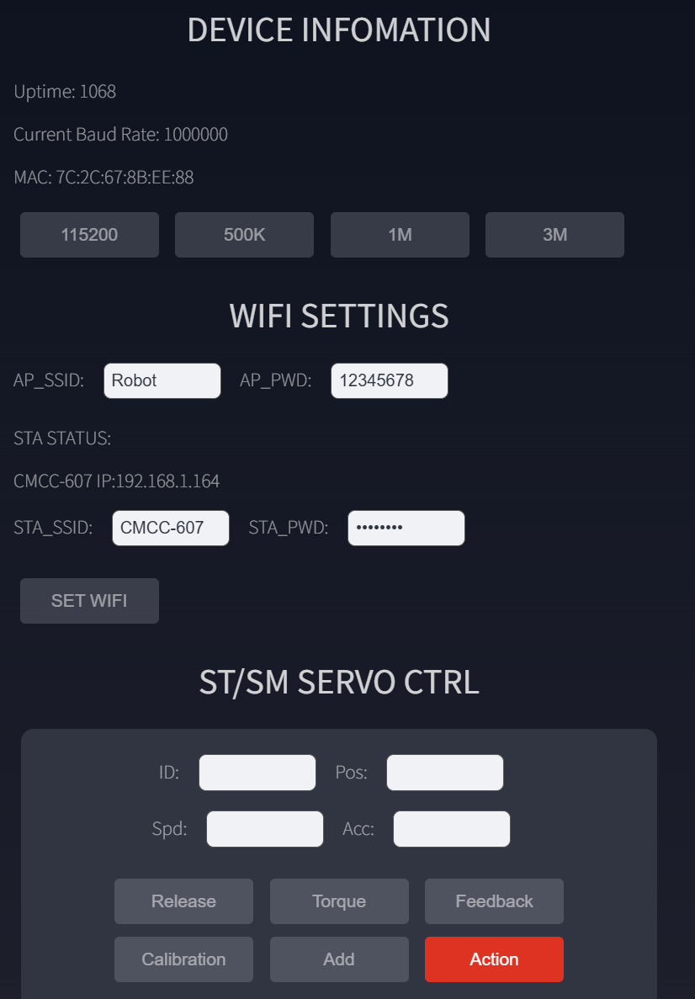
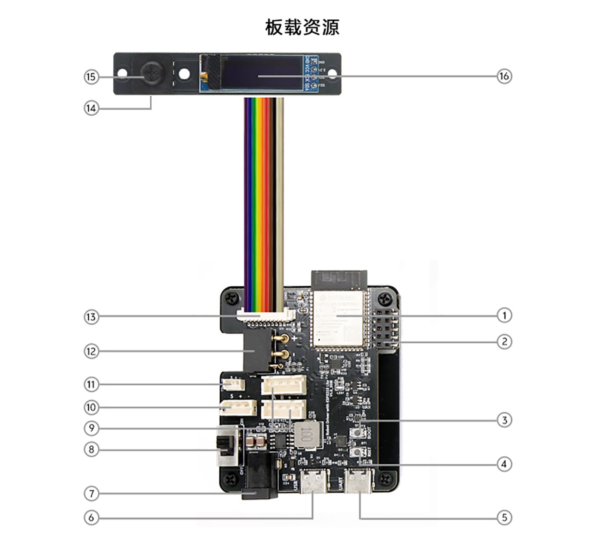

独立控制器
连接 Wi-Fi 后直接用浏览器控制设备、调试总线和保存动作脚本。
适合入门、演示和小型机器人WHAT IT DOES
Robot Driver 位于上位机与执行器之间。它负责接收控制指令、管理执行器总线，也可以在没有上位机的情况下执行本地任务。
连接 Wi-Fi 后直接用浏览器控制设备、调试总线和保存动作脚本。
适合入门、演示和小型机器人接收 PC、树莓派、Jetson 或其它主控发送的 JSON 指令，再控制执行器。
适合分层控制架构提供 TTL、RS485 和 CAN 接口，便于在原型阶段评估不同执行器方案。
统一主机侧控制入口开放固件开发路径，可扩展 IO、本地交互和机器人专用控制逻辑。
适合教学与二次开发QUICK START
先确认执行器电压，再接线、进入 Web 控制台并测试设备。验证完成后，再决定是否接入上位机或修改固件。
选择 TTL、RS485 或 CAN 接口。动力电源必须与所接执行器的额定电压一致。
连接控制板热点，在浏览器访问 192.168.4.1，无需安装专用 App。
测试设备 ID 和动作，再将多条 JSON 指令保存为可离线运行的任务文件。
Type-C 可以启动 ESP32-S3、OLED 和 Wi-Fi，但不能替代执行器动力电源。DC5521 或 XT30 输入会直接供给总线执行器。
WEB CONSOLE
内置 Web 控制台覆盖网络配置、总线波特率、舵机控制、JSON 调试和任务脚本。它适合首次配置与快速验证，不要求用户先搭建开发环境。


HARDWARE
ESP32-S3-WROOM-1、0.91 英寸 OLED、五向开关、无源蜂鸣器。
单线 TTL、RS485、CAN，可连接总线舵机、关节执行器和轮毂电机。
USB CDC、UART Type-C、2×5 HAT 接口和扩展 IO。
DC 6–20V 动力输入，板载 5V 5A DC-DC 与 3.3V LDO。
SECONDARY DEVELOPMENT
多数项目可以先把 Robot Driver 当作独立下位机使用。只有需要自定义实时逻辑、IO 或通信协议时，才需要进入固件开发。
有线连接稳定，适合 PC 或单板电脑调试、日志和持续通信。
请求方式简单，适合配置、低频动作和快速原型。
适合需要持续连接、实时指令和状态回传的无线应用。
通过 HAT 接口连接树莓派或嵌入式主控，适合机器人内部集成。
支持 Arduino 框架与 VS Code + PlatformIO。板载 IO0 和 EN 按键可用于手动进入下载模式与复位。
USB CDC、HTTP、WebSocket 与 GPIO UART 使用统一 JSON 指令，便于在不同主机接口之间迁移程序。
SPECIFICATIONS
FILES AND SUPPORT
当前可直接下载结构模型。Wiki、固件仓库、协议说明和示例程序链接确认后，可继续补入此处。